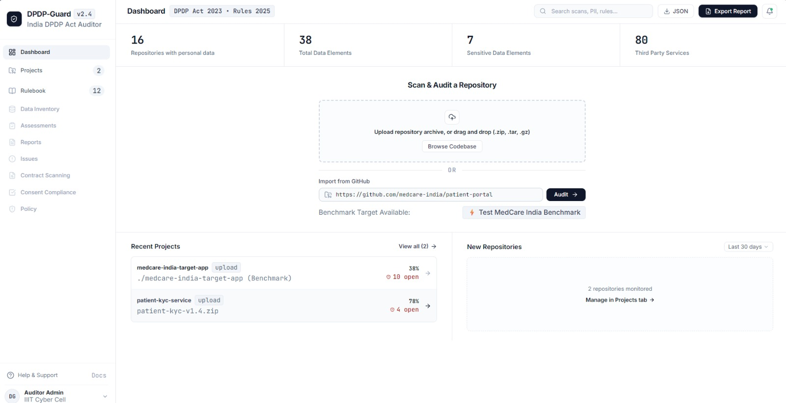
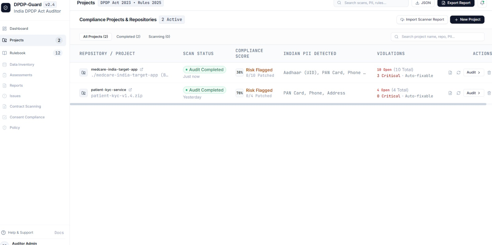
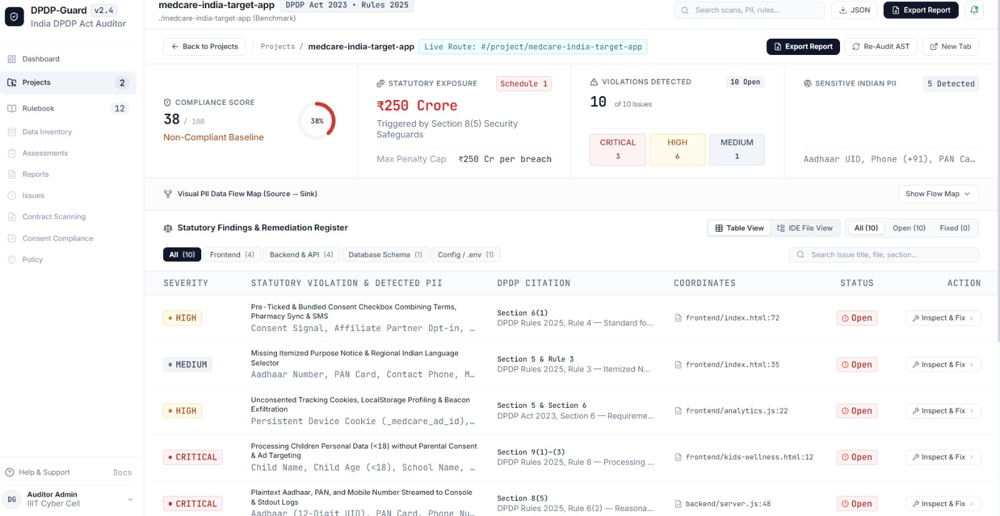
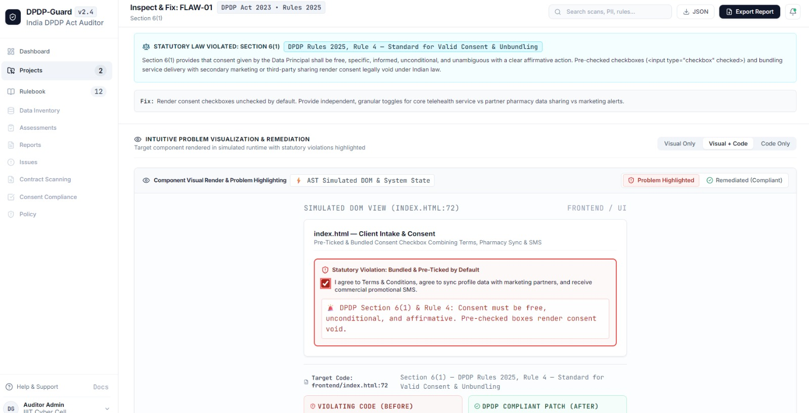
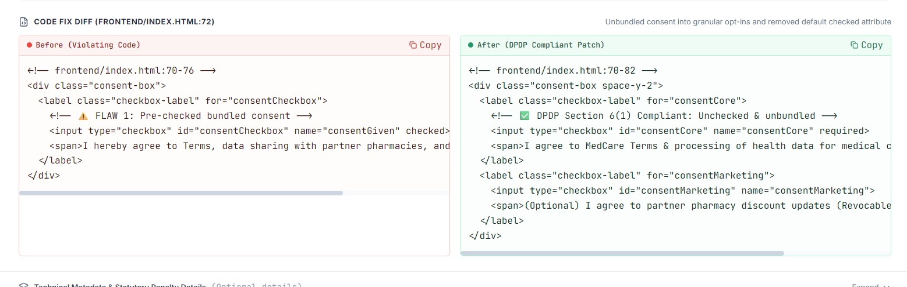

Automated DPDP Compliance
Deterministic local AST analysis, Indian PII detection, and automated statutory remediation.
Designed for Deterministic Compliance
Inspect AST passes, verify PII streams, and audit multi-lingual consent notices locally.





About DPDP Auditor
DPDP Auditor is a deterministic static code analysis and data flow verification tool designed specifically for India's Digital Personal Data Protection Act (DPDPA 2023). It runs locally in developer environments and CI/CD pipelines to ensure systems remain compliant prior to production release.
Static Code Analysis
Local AST inspection across Node.js, Python, and Go to block non-compliant endpoints.
Aadhaar & PII Detection
Detects unmasked 12-digit Aadhaar, PAN, and sensitive PII using Verhoeff checksums.
Section 6 Notice Validation
Validates itemized consent notices and purpose binding across 22 scheduled languages.
Built for Hack-A-Sol 5.0
DPDP Auditor was built by Team ESPASAD during the 36-hour Hack-A-Sol 5.0 hackathon. Our purpose is to solve India's impending data privacy compliance challenge under DPDPA 2023—giving engineering teams an offline, deterministic tool to proactively detect unbundled consent, sensitive Indian PII leaks (Aadhaar & PAN), and statutory exposure before code reaches production.
Questions & Answers
Everything you need to know about DPDP Auditor, India's DPDPA 2023 compliance, offline scanning, and automated AST remediation.
How does DPDP Auditor detect non-compliance in our codebase? expand_more
Does any proprietary source code or data leave our local environment? expand_more
How is the ₹250 Crore statutory exposure calculated? expand_more
Can DPDP Auditor automatically remediate detected violations? expand_more
How does it validate notices across all 22 scheduled Indian languages? expand_more
How do I integrate DPDP Auditor into our CI/CD workflow? expand_more
dpdp verify --strict --ci to your pull request checks or pre-commit hooks to block non-compliant PRs before merge. It also generates JSON and signed DPBI manifests for internal compliance archives.
Get Started with DPDP Auditor
Download the native desktop binary or inspect the open-source repository.
Windows 10 / 11 64-bit architecture
Explore the AST engine, rule definitions & CI/CD action